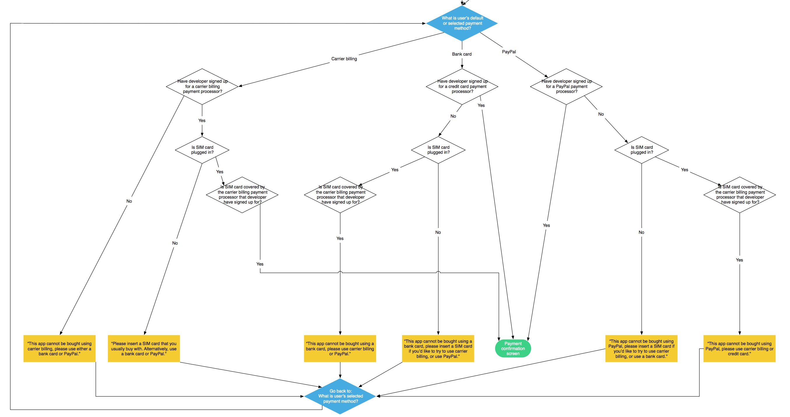
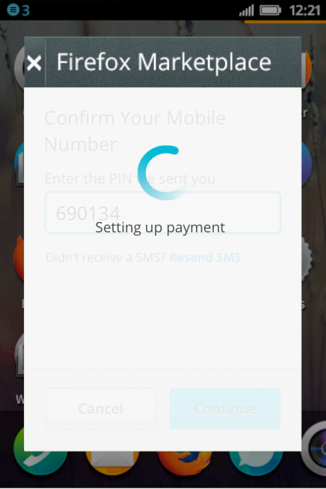
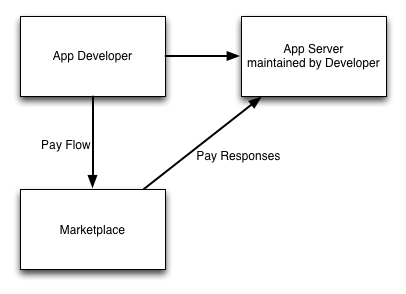
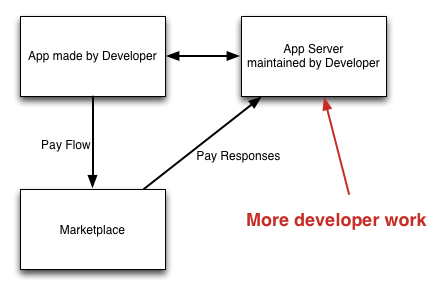
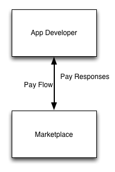

layout: true class: center, middle, inverse --- class: front # Payments Technical ## Q1, 2014 --- # Reference Implementation Full(er) stack testing for developers and QA. Style guide and localisations so payment providers don't have to make pages. Documentation - also as PDF. --- # Reference demo <video src="movs/purchase.ogg" style="height: 10em" controls autoplay loop></video> --- # Webpay - single page app Move from traditional app that returns HTML to a JS app consuming a REST API. Allows MCC and MNC access which then allows payment choice. --- # Payment choice  --- # Style guide <video src="movs/styleguide.ogg" style="height: 10em" controls autoplay loop></video> --- # Almost Silent SMS Edge case... if there's no header enrichment, fall back to MT Auth <img src="img/sms-auth.png" style="height: 7em"> <img src="img/sms-auth-confirm.png" style="height: 7em"> --- # Almost Silent SMS Will catch and do PIN for you. <img src="img/sms-auth.png" style="height: 7em">  --- # Replaceable receipt Firefox 29 (Firefox OS 1.4) onwards has replaceable receipts This allows: *subscriptions*, *trial periods*, *easier in-app payments*, *paywalls* --- # Replaceable receipt demo <video src="movs/receipts.ogg" controls autoplay loop></video> --- # New inapp payments  --- # New inapp payments  --- # New inapp payments  --- # Dashboard <video src="movs/metaplace.ogg" style="height: 10em" controls autoplay loop></video> --- # W3C payments Kumar, Andy will be attending Come talk to us about ideas --- ## Fin